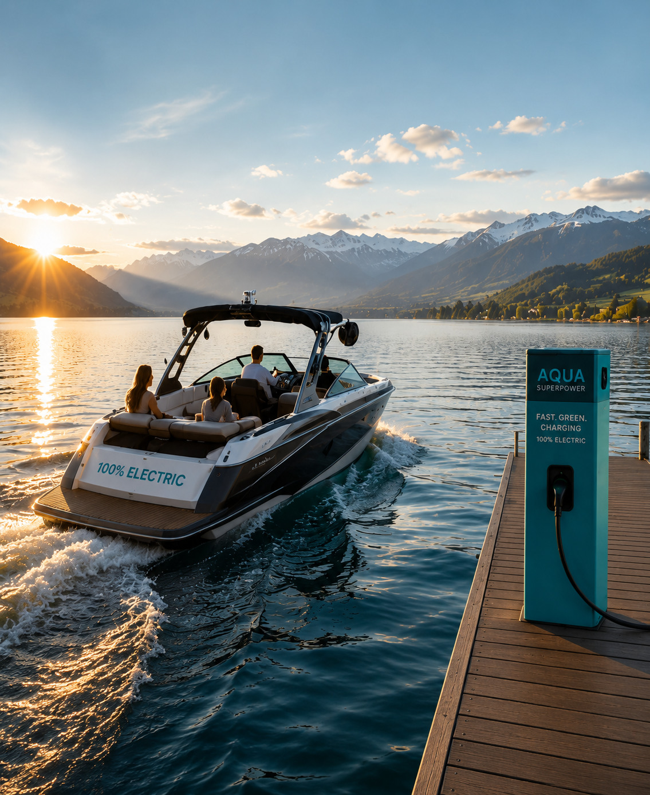
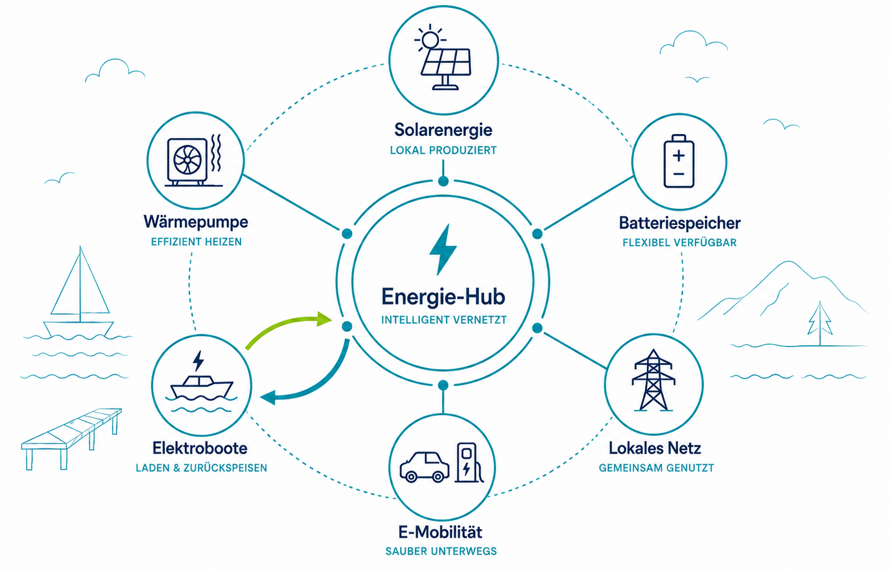
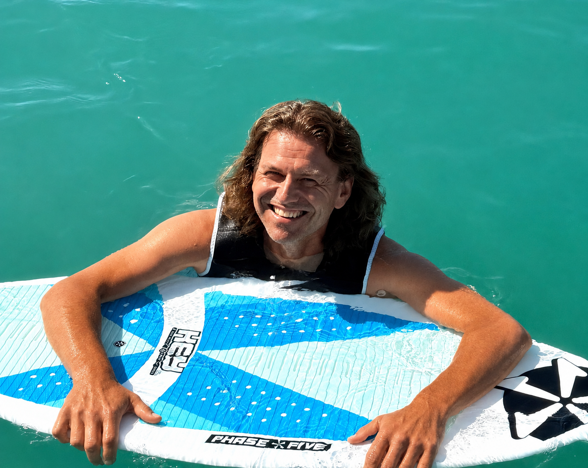
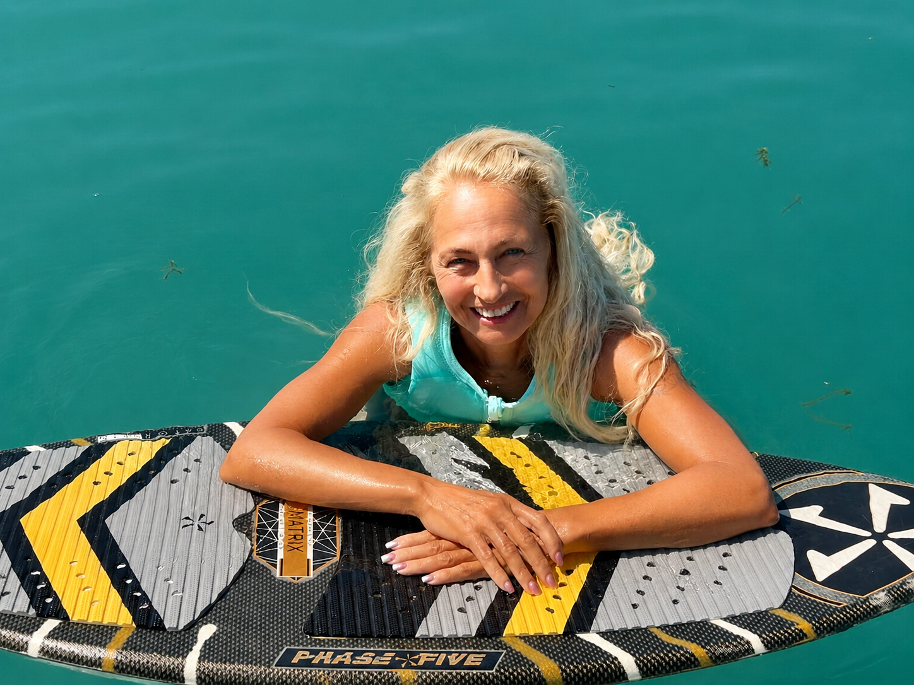
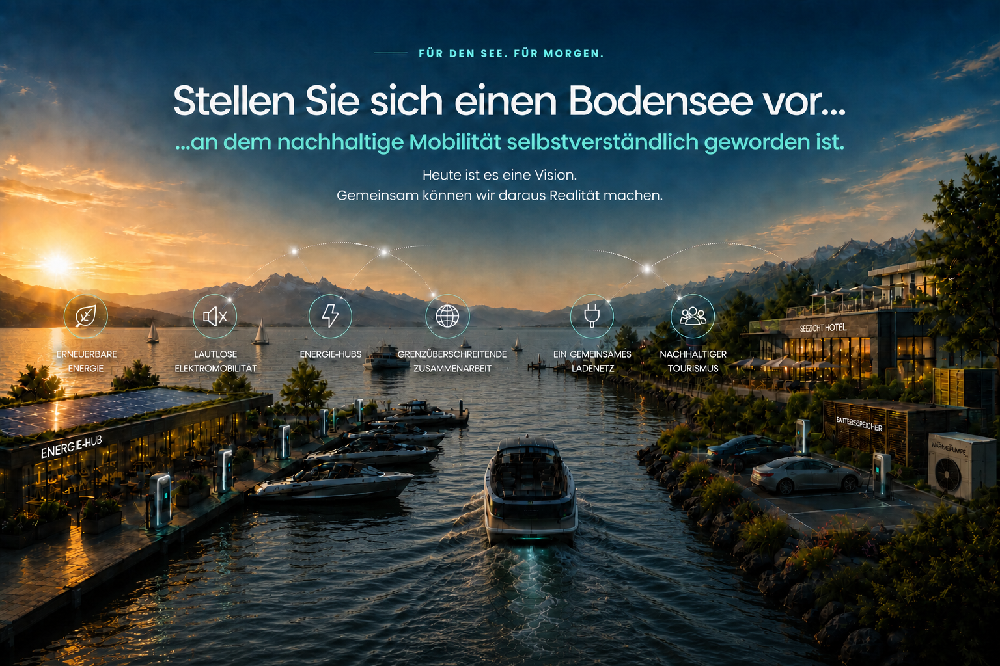

Bedarf verstehen
Gemeinden, Häfen, Unternehmen und die Bevölkerung bringen ihre Erfahrungen und Bedürfnisse ein.
Vision wird Realität.
Nicht irgendwann. Sondern jetzt.
Die Elektrifizierung ist der erste Schritt auf dem Weg zu Bodensee 2035. Wir möchten den Aufbau eines grenzüberschreitenden Ladenetzes für Elektroboote rund um den Bodensee anstossen – erneuerbar, intelligent und offen für alle.

Die Idee
Ladeinfrastruktur als Anfang. Vernetzung als Ziel.
Elektroboote gibt es bereits. Was am Bodensee noch fehlt, ist eine vernetzte Ladeinfrastruktur.
Ein Hafen kann künftig mehr sein als ein Ladeort. Er kann Energie erzeugen, speichern und dort verfügbar machen, wo sie gebraucht wird – auf dem Wasser und an Land.
„Wir schaffen die Plattform.
Die besten Ideen bringen Sie mit.“
PERSPEKTIVE · DAS VERNETZTE SYSTEM
Ein Energie-Hub verbindet, was bisher oft getrennt gedacht wird: Energie erzeugen, speichern und nutzen – für Boote, Fahrzeuge und Gebäude.

Die Sonne scheint, die Solaranlage am Hafen produziert Strom. Ein Teil davon lädt gerade ein Elektroboot oder ein Auto. Was nicht sofort gebraucht wird, fliesst in den Batteriespeicher und steht später zur Verfügung – etwa für die Wärmepumpe oder umliegende Gebäude.
Und es geht auch umgekehrt: Wer mit einem Elektroboot unterwegs ist, könnte künftig einen Teil der Energie aus der Bootsbatterie wieder zur Verfügung stellen, wenn sie gerade anderswo gebraucht wird.
So arbeiten Erzeugung, Speicherung und Nutzung zusammen. Energie kann aufgenommen, gespeichert und bei Bedarf wieder weitergegeben werden.
Aus einem einzelnen Ladepunkt wird ein vernetztes Energiesystem.

Nachhaltigfür Mensch und Natur ErneuerbarEnergie aus der Region
ErneuerbarEnergie aus der Region
 Vernetztintelligent verbunden
Vernetztintelligent verbunden

Offenfür alle, die mitgestaltenUnser Weg
Neue Ideen entstehen dort, wo Menschen ihre Erfahrungen teilen. Deshalb bringen wir Menschen, Wissen und unterschiedliche Perspektiven zusammen.
Gemeinden, Häfen, Unternehmen und die Bevölkerung bringen ihre Erfahrungen und Bedürfnisse ein.
Aus Erfahrungen, Ideen und unterschiedlichen Perspektiven entstehen mögliche Lösungsansätze.
Wo sich Chancen ergeben, können daraus gemeinsam erste konkrete Projekte entstehen.
Wo wir heute stehen
Die Vision steht. Jetzt beginnt der Austausch – offen für Ideen, Fragen und auch Bedenken aus der gesamten Bodenseeregion.
JULI 2026
Aus der Vision Bodensee 2035 entsteht mit der Elektrifizierung ein erstes konkretes Vorhaben.
AUGUST 2026
In Bottighofen suchen wir erstmals öffentlich den Austausch über Chancen, Fragen und Bedenken.
SEPTEMBER 2026
In Friedrichshafen bringen wir die Idee auf die Bühne und führen den Dialog weiter.
DANACH
Aus Gesprächen und neuen Verbindungen können die nächsten Schritte entstehen.
Nicht alle Antworten stehen heute schon fest.
Und genau das ist Teil der Idee: Bodensee 2035 soll im Austausch mit Menschen, Gemeinden, Unternehmen und Organisationen rund um den See weiter wachsen.
DIE MENSCHEN DAHINTER
Bodensee 2035 ist ein Verein, hinter dem wir – Daniel Niklaus und Doris Walter – stehen. Wir leben und arbeiten in der Region, sind auf und am See unterwegs und möchten dazu beitragen, dass sich der Bodensee als gemeinsamer Lebens-, Wirtschafts- und Innovationsraum weiterentwickelt.
Wir haben Bodensee 2035 ins Leben gerufen, weil wir überzeugt sind, dass in dieser Region unglaublich viel Potenzial steckt. Der Verein gibt uns den Rahmen, daraus gemeinsam mit anderen etwas entstehen zu lassen.


Mitgestalten
Wie sieht die Zukunft des Bodensees aus Ihrer Perspektive aus? Wählen Sie den Bereich, der zu Ihnen passt, und bringen Sie Ihre Erfahrungen, Ideen und Erwartungen ein.
Ihre Perspektive
Dauer: ungefähr 3–5 Minuten

Mitgestalten